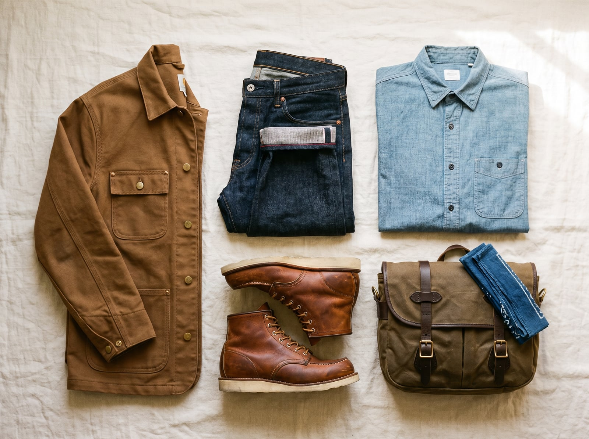
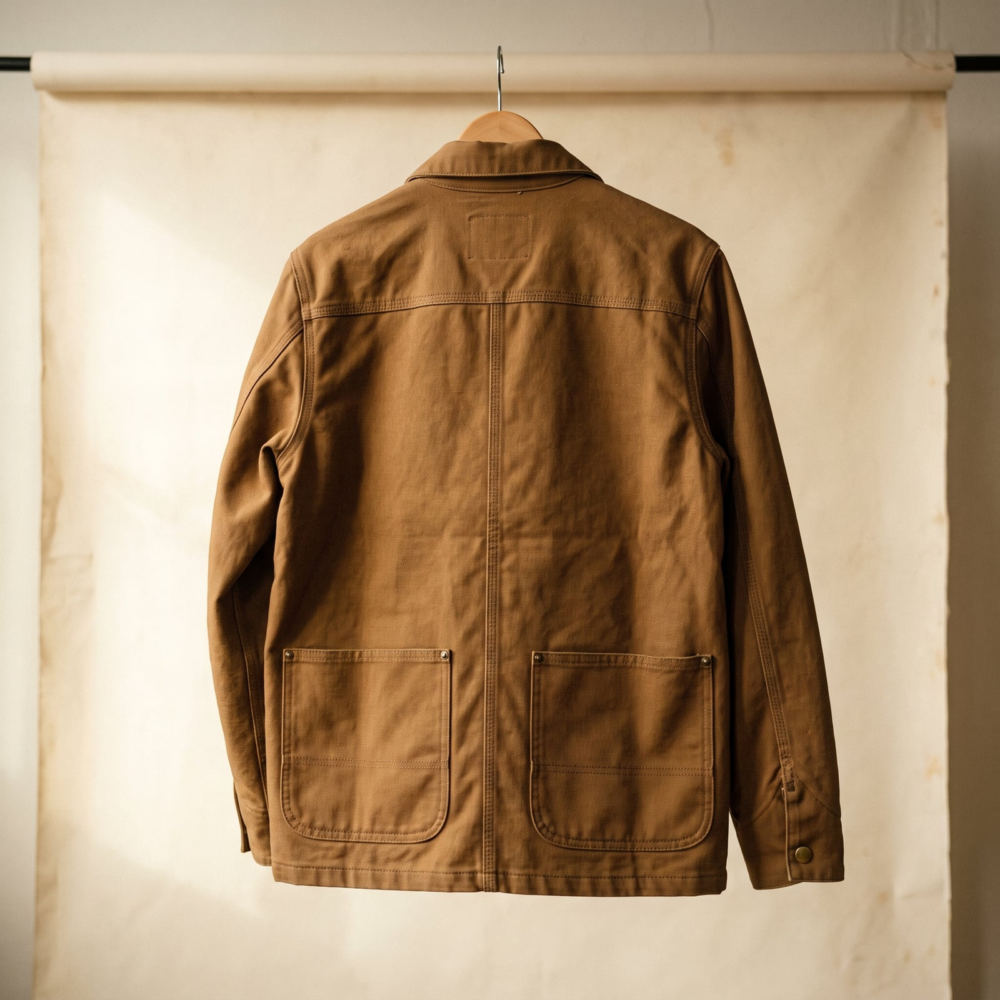
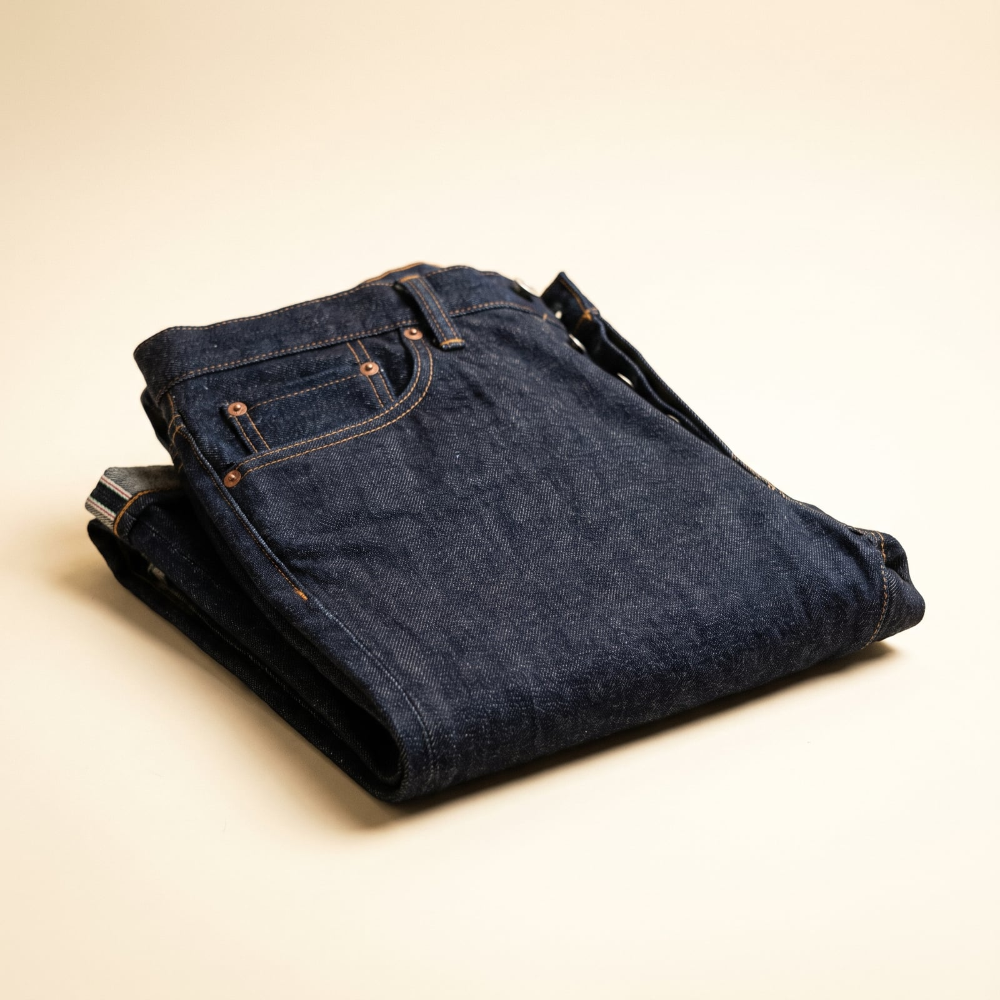
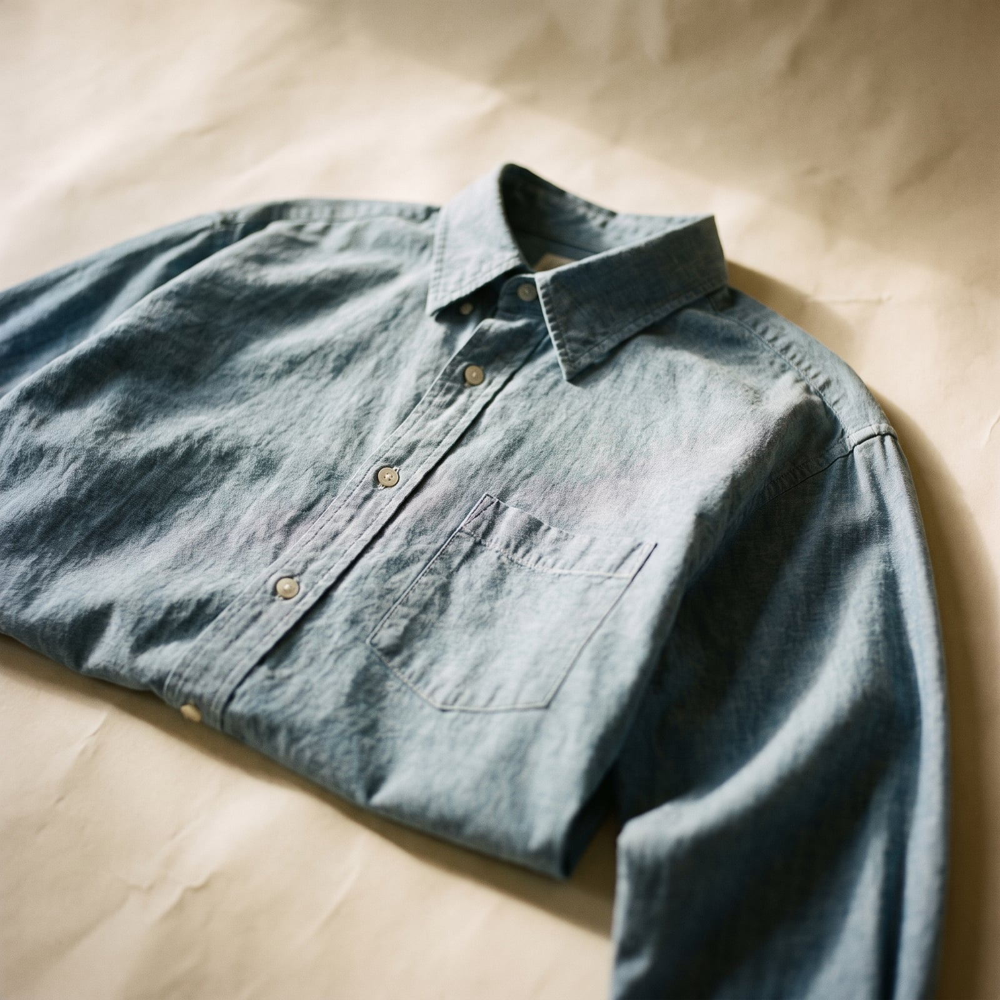
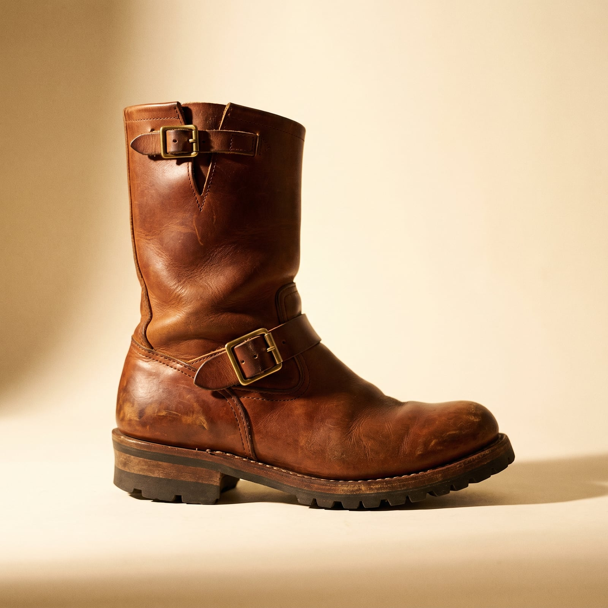
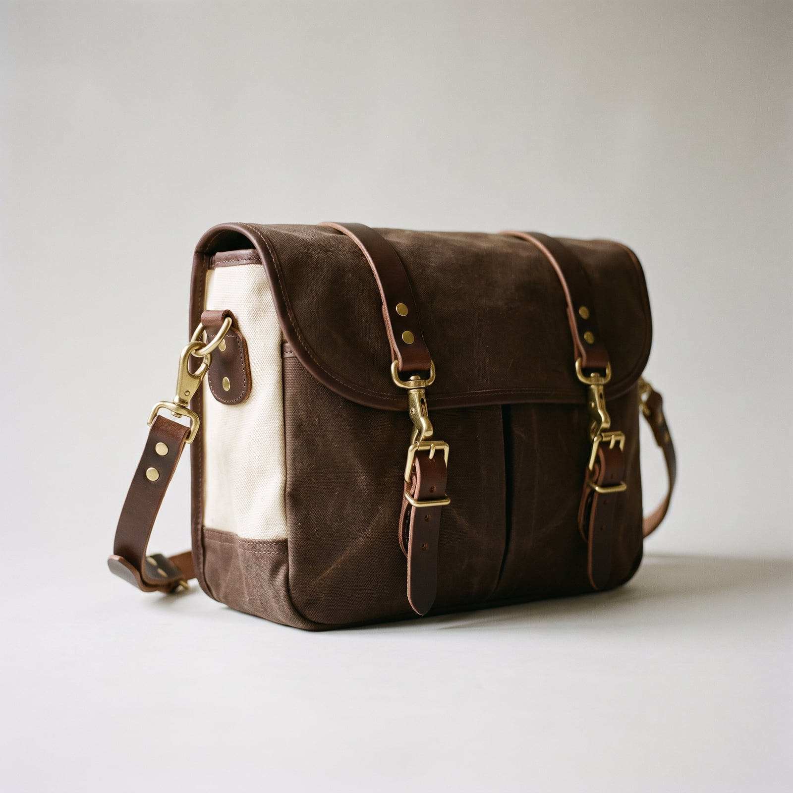

The Journeyman
American workwear was never designed to be looked at. Levi Strauss patented the riveted pocket in 1873 to keep miners' trousers from tearing at the seams; Carhartt started outfitting railroad workers in 1889 with duck canvas built to survive a decade of actual labor; Filson kitted out prospectors headed for the Yukon gold rush in 1897 with the promise that the gear, if nothing else, would outlast the trip. The clothes were honest by necessity — no fabric could hide a flaw for long once it met a job site.
That honesty is what got them adopted decades later by people who'd never worked those jobs at all — artists, musicians, and eventually entire menswear subcultures who recognized that a triple-stitched seam and a brass rivet were a kind of design language, blunt and unimprovable. The revival brought raw selvedge denim, chore coats, and engineer boots into wardrobes that had nothing to do with railroads, but the appeal never changed: things that were built, not styled.
It suits people who are suspicious of ornament and who'd rather a garment prove itself over ten years than impress anyone in the first ten minutes. There's a kind of integrity in it — dressing for durability is a way of saying you don't need to be told a thing is good, you'll find out yourself, the hard way, and the clothes had better be ready.
- Raw selvedge denim, meant to fade and crease with your own body's habits
- Duck canvas chore coats and triple-stitched seams built for actual labor
- Brass rivets and bar-tacks at every stress point
- Chambray work shirts and bandanas, unpretentious and endlessly practical
- Boots — engineer or moc-toe — resoleable, expected to outlast the wearer's patience with them


The Chore Coat
French bleu de travail jackets and American railroad duck coats converged on the same idea by the early 1900s: a boxy, roomy jacket with patch pockets, cut loose enough to move in and tough enough to outlast the job.
Genuine duck canvas construction, mass-produced but built to the same pattern.
Shop this →Heavier canvas and a closer American or British cut than the entry tier.
Shop this →Obsessively reproduced vintage canvas and hardware, made to fade and wear exactly like the 1930s originals.
Shop this →
The Raw Denim
Levi Strauss patented the riveted pocket in 1873 for miners whose pockets kept tearing; raw, unwashed denim survived as the default for a century after simply because nobody bothered to wash it before selling it.
Real selvedge or a close approximation at a genuine discount.
Shop this →Heavier raw denim woven on old shuttle looms, built to fade distinctly.
Shop this →Japanese-woven 18oz+ denim, some of the heaviest and most obsessively made in the world.
Shop this →
The Chambray Shirt
Lighter than denim but cut from the same indigo-dyed cotton tradition, chambray became the standard field and railroad shirt through the early twentieth century because it hid dirt and stayed cool.
Genuine plain-weave chambray at a real discount.
Shop this →Heavier cotton and a more considered cut through the shoulders.
Shop this →Selvedge chambray woven on vintage looms, cut to the same block as their denim.
Shop this →
The Work Boot
Red Wing built its Moc Toe boot in 1952 for loggers who needed a rounder, roomier toe than a standard work boot; the same last has barely changed since, because the problem it solved never went away.
Goodyear welted at a real discount from the heritage names.
Shop this →The reference boot the entire genre gets measured against.
Shop this →Built to order in the Pacific Northwest, on lasts and constructions barely changed since the mid-century logging camps.
Shop this →
The Canvas Field Bag
Filson outfitted Yukon gold rush prospectors in 1897 with bags built on the same logic as their coats: heavy waxed or unwaxed cotton, bridle leather straps, and brass hardware that would rather bend than break.
Genuine waxed canvas construction at a discount.
Shop this →The reference bag, guaranteed for life by the maker.
Shop this →Hand-cut and stitched in small runs, often repairable indefinitely by the maker itself.
Shop this →Buy the raw denim unwashed and let it fade from your own wear — the creases at the knee and fade at the pocket are supposed to map your actual life, and a pre-distressed pair fakes a story that isn't there. The same logic applies to the boots: resole them rather than replace them, since a scuffed, re-heeled boot reads as more credible than a pristine one.
Let the chore coat and chambray shirt show real wear at the cuffs and collar — this wardrobe is built around functional garments actually being used for something, and a spotless version of any of it undercuts the whole premise. Spend on quality at the stress points — bar-tacks, rivets, real leather rather than bonded — since these are the pieces meant to outlast a decade of actual use.
Don't buy this wardrobe pre-distressed or 'vintage-washed' from a fast-fashion label — the whole point is authentic wear accumulated through actual use, and a manufactured fade or a fake grease stain reads as costume the moment anyone looks closely. This is the rare style where trying too hard to look effortless is worse than looking slightly too new.
Resist pairing genuinely heavy-duty workwear with anything precious or delicate — a fine silk pocket square or a dress shoe undercuts the coherence of a wardrobe that's supposed to read as one continuous, practical logic from collar to boot. If the clothes never actually get dirty, the whole thing reads as affectation rather than habit.
Chambray over denim, sleeves rolled instead of removed, a lighter-weight duck canvas if the chore coat comes at all. Boots stay on regardless of heat -- that's not negotiable.
A heavier flannel-lined chore coat or a shearling-collar version, thermal layers under the chambray, and a wool watch cap. Everything gets one weight heavier, nothing gets fancier.
Genuine waxed or oiled canvas, not a fashion raincoat -- this wardrobe already owns the right coat for this. Boots get treated with dubbin beforehand, not after.
Insulated versions of the same chore coat and boots, a wool-lined cap with ear flaps, and gloves built for actual work, not just warmth.
The honest answer is this wardrobe doesn't dress up so much as clean up -- the same pieces, newer and less faded, with a collared shirt buttoned all the way and actual leather shoes instead of boots.

A cross-country drive over a coastal flight every time, and national parks over resorts — the destination matters less than having somewhere to actually stop the car and look at something.
Small industrial towns get visited specifically to see how something is still made there — a mill, a tannery, a foundry — with the same reverence other people reserve for museums.
Cormac McCarthy and John Steinbeck, read for the landscape as much as the plot, and biographies of tradesmen and inventors who built something with their hands before anyone thought to write about them.
Any well-illustrated history of American manufacturing gets picked up secondhand and actually read, not just displayed. Reads at night, after the work is actually done, and falls asleep doing it more often than not.
Find it on Amazon →Woody Guthrie and early Johnny Cash, plus Springsteen's blue-collar records specifically — the ones about the job and the town, not the arena tours.
A genuine, unpretentious love of country radio on a long drive, station chosen by whatever comes in clearest rather than any particular loyalty.
Listen on YouTube →A workbench that gets more attention than the living room, tools organized with real reverence — each one with a place, and a specific opinion about who's allowed to borrow which.
Furniture built rather than bought where possible, imperfect in ways that are pointed out with pride rather than apology, and nothing precious enough in the house to actually worry about.
See more on Pinterest →Woodworking, and a habit of fixing whatever's broken before seriously considering replacing it — the fix doesn't always outlast the original, but the attempt is non-negotiable.
Fishing that's more about the quiet than the catch, and a garage project that's been 'almost done' for a year, worked on in twenty-minute increments whenever the mood strikes.